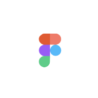
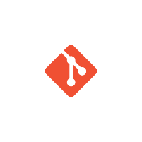

About Me
My Introduction
Pre-final year CSE undergrad. I aspire to become a data scientist. I explore several aspects, such as technical writing, application development, front-end development, and UI/UX designing. Expertise in statistics, machine learning, and exploratory data analysis. I am passionate about learning new topics in data science, data visualization, and research.



Qualification
My Personal JourneyComputer Engineering
GEC Gandhinagar
2020 - Present
HIGHER SECONDARY IN SCIENCE
Axay High School
2018-2020
Social Media Manager
GDSC GEC Gandhinagar
Sept 2021 - Present
Tech Lead - AI/ML
Club IDE
Jul 2022 - Present